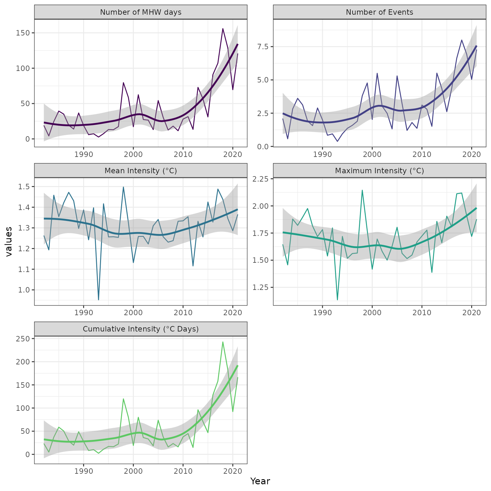
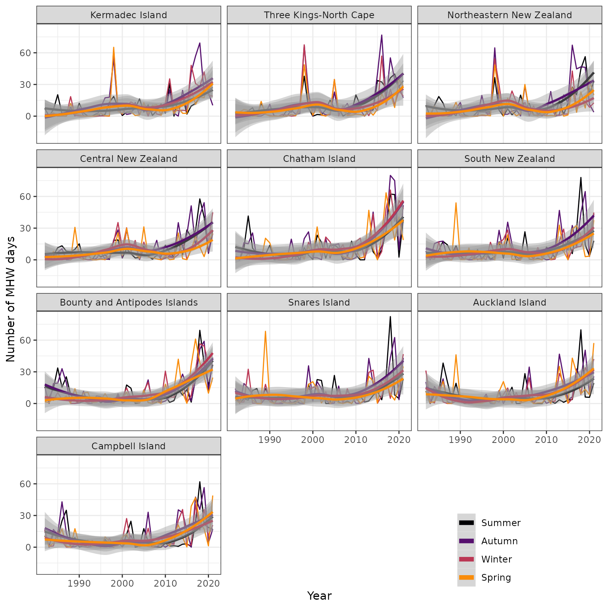
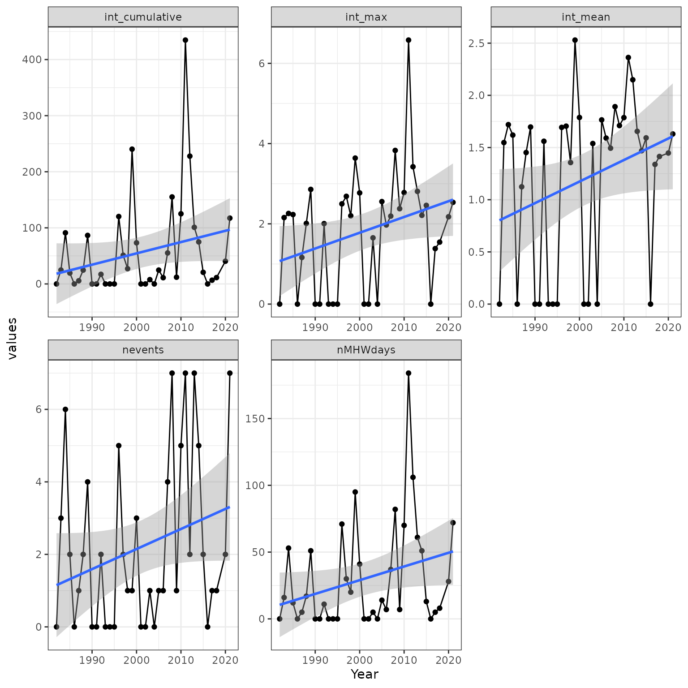

vignettes/MHW_metric_trends.Rmd
MHW_metric_trends.RmdIn the previous vignettes we saw how to download and prepare OISST dataand to detect MHWs in gridded data. In this vignette we will use data subsetted around the New Zealand (NZ) Exclusive Economic Zone (EEZ) for our example to calculate trends and breakpoints for bioregions (from Spalding et al. (2007)) and seasons as shown in Thoral et al. (2022).
The Marine Ecosystems of the World (MEOW) shapefile may be downloaded here. Extract the contents of the download to a convenient location before use with the following code chunks. For more information on the MEOW please see Spalding et al. (2007).
# Load and process the MEOW shapefile
# NB: Change your file path to where the files were unzipped
MEOW_NZ <- st_read('~/Desktop/meow_ecos.shp') %>%
dplyr:::filter(PROVINCE %in% c('Northern New Zealand', 'Southern New Zealand','Subantarctic New Zealand')) %>%
st_make_valid() %>%
st_transform(crs = 4326) %>%
st_shift_longitude() %>%
mutate(ECOREGION = factor(ECOREGION, levels = c("Kermadec Island", "Three Kings-North Cape", "Northeastern New Zealand",
"Central New Zealand","Chatham Island","South New Zealand",
"Bounty and Antipodes Islands","Snares Island","Auckland Island","Campbell Island")))
# Find max lon/lat ranges
lon_range <- range(sf::st_coordinates(MEOW_NZ$geometry)[,1])
lat_range <- range(sf::st_coordinates(MEOW_NZ$geometry)[,2])
# Expand a bit to make sure all necessary pixels are downloaded
lon_range <- c(lon_range[1]-0.25, lon_range[2]+0.25)
lat_range <- c(lat_range[1]-0.25, lat_range[2]+0.25)MEOW bioregions around New Zealand
Once we have our MEOW data for NZ ready it’s time to find out which
pixels specifically we will want to analyse. The process of assigning
bioregions to pixels is simplified by using the sf (Pebesma (2018)) package.
# Create OISST grid
lon_lat_OISST <- base::expand.grid(seq(0.125, 359.875, by = 0.25),
seq(-89.875, 89.875, by = 0.25)) %>%
dplyr::rename(lon = Var1, lat = Var2) %>%
dplyr::arrange(lon, lat) %>%
st_as_sf(coords = c('lon', 'lat'), crs = 4326)
# Join OISST grid to MEOW spatial and filter out pixels not within NZ EEZ
lon_lat_NZ <- st_join(lon_lat_OISST, MEOW_NZ) %>%
dplyr::select(geometry, ECOREGION, PROVINCE) %>%
dplyr::filter(!is.na(ECOREGION))
# Convert the coordinates back to a tibble for further use
# NB: Should be 6,398 pixels
lon_lat_NZ_df <- lon_lat_NZ %>%
mutate(lon = sf::st_coordinates(.)[,1],
lat = sf::st_coordinates(.)[,2]) %>%
mutate(lon = as.numeric(lon), lat = as.numeric(lat)) %>%
data.frame() %>%
dplyr::select(-geometry)We begin by downloading daily OISST v2.1 data for all pixels around
New Zealand (lat 25-55°S, lon 160-190°E) and use the functions
heatwaveR::ts2clim() and
heatwaveR::detect_event() to get the climatology from the
time series. Note that this full process will take roughly one hour on a
desktop computer given the number of pixels and days. Even though we
know the exact coordinates of the pixels that we want, it is still
faster to use the rerddap::griddap() function to extract a
bounding box around NZ rather than to use the functions in the
raster package to extract the EEZ
polygons.
# Get SST for around NZ + Islands and for all years
OISST_sub_dl <- function(time_df){
OISST_dat <- griddap(x = "ncdcOisst21Agg",
url = "https://coastwatch.pfeg.noaa.gov/erddap/",
time = c(time_df$start, time_df$end),
zlev = c(0, 0),
latitude = lat_range,
longitude = lon_range,
fields = c("sst"))$data %>%
mutate(time = as.Date(stringr::str_remove(time, "T00:00:00Z"))) %>%
dplyr::rename(t = time, temp = sst) %>%
dplyr::select(lon, lat, t, temp) %>%
na.omit()
}
# The span of years to download
dl_years <- data.frame(date_index = 1:5,
start = as.Date(c("1982-01-01", "1990-01-01",
"1998-01-01", "2006-01-01", "2014-01-01")),
end = as.Date(c("1989-12-31", "1997-12-31",
"2005-12-31", "2013-12-31", "2021-12-31")))
# Download the data
# NB: Takes ~21 minutes on a desktop computer
# NB: Contains 175,208,352 rows, 4 columns, and uses ~15 GB of RAM
OISST_data <- dl_years %>%
group_by(date_index) %>%
group_modify(~OISST_sub_dl(.x)) %>%
ungroup() %>%
dplyr::select(lon, lat, t, temp)
# Filter out only the NZ pixels
# NB: Contains 87,195,152 rows
OISST_data_NZ <- left_join(lon_lat_NZ_df, OISST_data, by = c("lon", "lat")) %>% drop_na()
# Get the climatologies only
clim_only <- function(df){
# First calculate the climatologies
clim <- ts2clm(data = df, climatologyPeriod = c("1982-01-01", "2011-12-31"))
# Then the events
event <- detect_event(data = clim)
# Return only the climatology metric dataframe of results
return(event$climatology)
}
# Extract the climatology values
# NB: Takes ~21 minutes on a desktop computer
system.time(
OISST_clim <- OISST_data_NZ %>%
group_by(ECOREGION, PROVINCE, lon, lat) %>%
group_modify(~clim_only(.x)) %>%
drop_na()
)
# Get summary
MHW_summary <- OISST_clim %>%
dplyr::select(-c(doy, thresh, threshCriterion, durationCriterion, event)) %>%
mutate(season_num = month(as.Date(floor_date(t, unit = "season"))),
year = year(t)) %>%
mutate(season = recode_factor(season_num, `12` = "Summer", `3` = "Autumn", `6` = "Winter", `9` = "Spring")) %>%
mutate(intensity = temp-seas) %>%
group_by(ECOREGION, PROVINCE, lon, lat, year, season) %>%
summarise(nevents = length(unique(event_no)),
nMHWdays = length(t),
int_cumulative = sum(intensity),
int_mean = mean(intensity),
int_max = max(intensity), .groups = "drop") %>%
pivot_longer(-c(ECOREGION, PROVINCE, lon, lat, year, season), names_to = 'metrics', values_to = 'values')
# Save for future use
# NB: 10.8 MB
saveRDS(MHW_summary,"~/Desktop/MHW_summary_NZ_1982_2021_OISST.Rds")
# Load data from previous code chunk
MHW_summary_NZ <- readRDS("~/Desktop/MHW_summary_NZ_1982_2021_OISST.Rds")
# get count of unique pixels
MHW_summary_NZ_npix <- MHW_summary_NZ %>%
dplyr::select(lon, lat) %>%
dplyr::distinct()
# Get annual summaries
MHW_annual_summary_NZ <- MHW_summary_NZ %>%
pivot_wider(names_from = metrics, values_from = values) %>%
group_by(year) %>%
summarize(Number_MHW_days = sum(nMHWdays)/nrow(MHW_summary_NZ_npix),
Nevents = sum(nevents)/nrow(MHW_summary_NZ_npix),
Mean_Intensity = mean(int_mean),
Maximum_Intensity = mean(int_max),
Cumulative_Intensity = sum(int_cumulative)/nrow(MHW_summary_NZ_npix), .groups = "drop") %>%
complete(year = 1982:2021) %>%
pivot_longer(-year, names_to = 'Metrics', values_to = 'values') %>%
mutate(Metrics = factor(Metrics, levels = c("Number_MHW_days", "Nevents", "Mean_Intensity", "Maximum_Intensity", "Cumulative_Intensity")))
# Prepare prettier labels
metrics_labs <- c(`Number_MHW_days` = "Number of MHW days",
`Nevents` = "Number of Events",
`Mean_Intensity` = "Mean Intensity (°C)",
`Maximum_Intensity` = "Maximum Intensity (°C)",
`Cumulative_Intensity` = "Cumulative Intensity (°C Days)")
# Create figure
p <- ggplot(MHW_annual_summary_NZ, aes(x = year, y = values, col = Metrics)) +
geom_line(size = 0.5) +
geom_smooth(se = T) +
scale_colour_viridis(begin = 0, end = 0.75, option = "viridis", discrete = T) +
facet_wrap(Metrics ~ ., scales = 'free', labeller = as_labeller(metrics_labs), ncol = 2) +
labs(x = "Year", Y = NULL) +
theme_bw() +
theme(legend.position = "none")
p
# Coerce to interactive plotly format
# plotly::ggplotly(p)It seems like some of the metrics are going up, and that there is a
potential acceleration after the years 2010. We can then calculate non
parametric linear trends (Sen’s slope and Mann-Kendall test) and
breakpoints (Pettitt test) using the trend (Pohlert (2020)) package as well as the more
usual and parametric lm function.
# Get annual trends
MHW_annual_trends_NZ <- MHW_annual_summary_NZ %>%
group_by(Metrics) %>%
nest() %>%
mutate(ts_out = purrr::map(data, ~ts(.x$values, start = 1982, end = 2021, frequency = 1))) %>%
mutate(sens = purrr::map(ts_out, ~sens.slope(.x, conf.level = 0.95)),
pettitt = purrr::map(ts_out, ~pettitt.test(.x)),
lm = purrr::map(data, ~lm(values ~ year, .x))) %>%
mutate(Sens_Slope = as.numeric(unlist(sens)[1]),
P_Value = as.numeric(unlist(sens)[3]),
Change_Point_Year = time(ts_out[[1]])[as.numeric(unlist(pettitt)[3])],
Change_Point_pvalue = as.numeric(unlist(pettitt)[4]),
lm_slope = unlist(lm)$coefficients.year) %>%
# Add step of cutting time series in 2 using Change_Point_Year
mutate(pre_ts = purrr::map(ts_out, ~window(.x, start = 1982, end = Change_Point_Year)),
post_ts = purrr::map(ts_out, ~window(.x, start = Change_Point_Year, end = 2021))) %>%
# Add step of calculating sen's slope and p-value to pre and post change point year
mutate(sens_pre = purrr::map(pre_ts, ~sens.slope(.x, conf.level = 0.95)),
Sens_Slope_pre = as.numeric(unlist(sens_pre)[1]), P_Value_pre = as.numeric(unlist(sens_pre)[3]),
sens_post = purrr::map(post_ts, ~sens.slope(.x, conf.level = 0.95)),
Sens_Slope_post = as.numeric(unlist(sens_post)[1]),
P_Value_post = as.numeric(unlist(sens_post)[3])) %>%
dplyr::select(Metrics, Sens_Slope, P_Value, Change_Point_Year, Change_Point_pvalue, lm_slope,
Sens_Slope_pre, P_Value_pre, Sens_Slope_post, P_Value_post)
# Create table
kable(MHW_annual_trends_NZ, caption = "Table 1 - Sens's Slope and p-value.") %>%
kable_classic()| Metrics | Sens_Slope | P_Value | Change_Point_Year | Change_Point_pvalue | lm_slope | Sens_Slope_pre | P_Value_pre | Sens_Slope_post | P_Value_post |
|---|---|---|---|---|---|---|---|---|---|
| Number_MHW_days | 1.4076833 | 0.0005881 | 2012 | 0.0057340 | 1.9948078 | 0.2098700 | 0.6341459 | 10.7631932 | 0.0490980 |
| Nevents | 0.0986939 | 0.0006407 | 2012 | 0.0107663 | 0.1022698 | 0.0196013 | 0.5183675 | 0.4852404 | 0.0318231 |
| Mean_Intensity | 0.0003127 | 0.8796101 | 2014 | 0.5718403 | 0.0001896 | -0.0025024 | 0.1328499 | 0.0046036 | 0.9015386 |
| Maximum_Intensity | 0.0032911 | 0.2997629 | 2012 | 0.0934928 | 0.0034480 | -0.0059114 | 0.0957834 | 0.0310040 | 0.2104977 |
| Cumulative_Intensity | 1.8267629 | 0.0008984 | 2012 | 0.0057340 | 2.8253926 | 0.2116512 | 0.7596538 | 15.4240340 | 0.0490980 |
In fact, we see significant change-point years for the number of MHW days (2012), number of events (1997) and cumulative intensity (2012). The slopes pre and post change-point are documenting the recent change in the metrics which complement the trend on the full time series. What are the reason behind the change-points?
One can be more interested in finding patterns in MHW trends between ecoregions.
# Count pixels per realm
MHW_summary_NZ_npix_realms <- MHW_summary_NZ %>%
group_by(lon, lat, ECOREGION) %>%
tally() %>%
group_by(ECOREGION) %>%
tally() %>%
rename(npix = n)
MHW_summary_NZ_npix_realms## # A tibble: 10 × 2
## ECOREGION npix
## <fct> <int>
## 1 Kermadec Island 829
## 2 Three Kings-North Cape 364
## 3 Northeastern New Zealand 581
## 4 Central New Zealand 1242
## 5 Chatham Island 665
## 6 South New Zealand 496
## 7 Bounty and Antipodes Islands 776
## 8 Snares Island 208
## 9 Auckland Island 352
## 10 Campbell Island 456
# Summarise by realm
MHW_summary_NZ_realms <- left_join(MHW_summary_NZ, MHW_summary_NZ_npix_realms, by = 'ECOREGION') %>%
pivot_wider(names_from = metrics,values_from = values) %>%
group_by(year, ECOREGION, season, npix) %>%
summarize(Number_MHW_days = sum(nMHWdays),
Nevents = sum(nevents),
Mean_Intensity = mean(int_mean),
Maximum_Intensity = mean(int_max), # get the max instead of mean(max)--> nope, tells different story
Cumulative_Intensity = sum(int_cumulative), .groups = "drop") %>%
mutate(Number_MHW_days = Number_MHW_days/npix,
Nevents = Nevents/npix,
Cumulative_Intensity = Cumulative_Intensity/npix) %>%
group_by(ECOREGION, season) %>%
complete(year = 1982:2021) %>%
dplyr::select(-npix) %>%
pivot_longer(-c(year, ECOREGION, season), names_to = 'Metrics', values_to = 'values') %>%
mutate(Metrics = factor(Metrics, levels = c("Number_MHW_days", "Nevents", "Mean_Intensity", "Maximum_Intensity", "Cumulative_Intensity"))) %>%
replace(is.na(.), 0)
# Plot the results
p <- MHW_summary_NZ_realms %>%
dplyr::filter(Metrics == 'Number_MHW_days') %>%
ggplot(aes(x = year, y = values, colour = season)) +
geom_line(size = 0.5) +
geom_smooth(se = T) +
labs(x = "Year", y = "Number of MHW days") +
scale_colour_viridis(begin = 0, end = 0.75, option = "inferno", discrete = T) +
guides(colour = guide_legend(override.aes = list(shape = 15, size = 2))) +
facet_wrap(ECOREGION~., ncol = 3) +
theme_bw() +
theme(legend.position = c(0.8,0.05),
legend.title = element_blank())
p
# Coerce to plotly format
# plotly::ggplotly(p)We could also show similar graphs for other metrics, like number of events, min, max or cumulative intensity.
# Get trends
MHW_trends_NZ_realms <- MHW_summary_NZ_realms %>%
group_by(Metrics, ECOREGION, season) %>%
nest() %>%
mutate(ts_out = purrr::map(data, ~ts(.x$values, start = 1982, end = 2021, frequency = 1))) %>%
mutate(sens = purrr::map(ts_out, ~sens.slope(.x, conf.level = 0.95)),
pettitt = purrr::map(ts_out, ~pettitt.test(.x)),
lm = purrr::map(data, ~lm(values ~ year,.x))) %>%
mutate(Sens_Slope = as.numeric(unlist(sens)[1]),
P_Value = as.numeric(unlist(sens)[3]),
Change_Point_Year = time(ts_out[[1]])[as.numeric(unlist(pettitt)[3])],
Change_Point_pvalue = as.numeric(unlist(pettitt)[4]),
lm_slope = unlist(lm)$coefficients.year) %>%
# Add step of cutting time series in 2 using Change_Point_Year
mutate(pre_ts = purrr::map(ts_out, ~window(.x, start = 1982, end = Change_Point_Year)),
post_ts = purrr::map(ts_out, ~window(.x, start = Change_Point_Year, end = 2021))) %>%
# Add step of calculating sen's slope and p-value to pre and post change point year
mutate(sens_pre = purrr::map(pre_ts, ~sens.slope(.x, conf.level = 0.95)),
Sens_Slope_pre = as.numeric(unlist(sens_pre)[1]),
P_Value_pre = as.numeric(unlist(sens_pre)[3]),
sens_post = purrr::map(post_ts, ~sens.slope(.x, conf.level = 0.95)),
Sens_Slope_post = as.numeric(unlist(sens_post)[1]),
P_Value_post = as.numeric(unlist(sens_post)[3])) %>%
ungroup() %>% # To remove Season column
dplyr::select(ECOREGION, Metrics, season, Sens_Slope, P_Value, Change_Point_Year, Change_Point_pvalue,
lm_slope, Sens_Slope_pre, P_Value_pre, Sens_Slope_post, P_Value_post) %>%
dplyr::filter(Metrics == 'Number_MHW_days')
# Create table
kable(MHW_trends_NZ_realms, caption = "Table 2 - Sens's Slope and p-value.") %>%
kable_classic()| ECOREGION | Metrics | season | Sens_Slope | P_Value | Change_Point_Year | Change_Point_pvalue | lm_slope | Sens_Slope_pre | P_Value_pre | Sens_Slope_post | P_Value_post |
|---|---|---|---|---|---|---|---|---|---|---|---|
| Kermadec Island | Number_MHW_days | Summer | 0.3259952 | 0.0030754 | 1996 | 0.0534560 | 0.3640147 | -0.3671090 | 0.1494110 | 0.6028146 | 0.0218871 |
| Kermadec Island | Number_MHW_days | Autumn | 0.4000279 | 0.0002529 | 1994 | 0.0013174 | 0.7115119 | -0.0562927 | 0.1102284 | 0.4614567 | 0.0930928 |
| Kermadec Island | Number_MHW_days | Winter | 0.3735424 | 0.0000637 | 1997 | 0.0001066 | 0.6334240 | -0.0232638 | 0.0928288 | 0.5916767 | 0.0721243 |
| Kermadec Island | Number_MHW_days | Spring | 0.3384026 | 0.0000131 | 1997 | 0.0004767 | 0.4619238 | -0.0065139 | 0.7184391 | 0.6558856 | 0.0141957 |
| Three Kings-North Cape | Number_MHW_days | Summer | 0.4941866 | 0.0007916 | 2009 | 0.0122651 | 0.6414382 | 0.0590049 | 0.6637597 | 2.4781364 | 0.0173434 |
| Three Kings-North Cape | Number_MHW_days | Autumn | 0.3979562 | 0.0000141 | 1997 | 0.0008207 | 0.7857679 | 0.0000000 | 0.7106441 | 0.6221682 | 0.0471253 |
| Three Kings-North Cape | Number_MHW_days | Winter | 0.2548354 | 0.0012495 | 1996 | 0.0029463 | 0.4402540 | -0.1340659 | 0.0924596 | 0.3587912 | 0.1339189 |
| Three Kings-North Cape | Number_MHW_days | Spring | 0.1282133 | 0.0089263 | 1996 | 0.0515404 | 0.3367761 | -0.1739927 | 0.1889280 | 0.2967033 | 0.1228530 |
| Northeastern New Zealand | Number_MHW_days | Summer | 0.3371773 | 0.0033163 | 2012 | 0.0248840 | 0.5321115 | 0.0172117 | 0.8250375 | 3.8476764 | 0.0122661 |
| Northeastern New Zealand | Number_MHW_days | Autumn | 0.2624003 | 0.0007739 | 1994 | 0.0078924 | 0.6956885 | -0.0015982 | 0.3447042 | 0.3675751 | 0.0969403 |
| Northeastern New Zealand | Number_MHW_days | Winter | 0.1248745 | 0.0041524 | 1996 | 0.0024199 | 0.2558353 | -0.0332760 | 0.3996123 | 0.0334399 | 0.7576397 |
| Northeastern New Zealand | Number_MHW_days | Spring | 0.0635057 | 0.0783498 | 1997 | 0.1560348 | 0.2860769 | -0.0607430 | 0.2057489 | 0.0953098 | 0.5593049 |
| Central New Zealand | Number_MHW_days | Summer | 0.2609508 | 0.0122461 | 2012 | 0.0248840 | 0.5081329 | -0.0236884 | 0.8383871 | 3.0571659 | 0.1074046 |
| Central New Zealand | Number_MHW_days | Autumn | 0.4090982 | 0.0003969 | 1997 | 0.0041288 | 0.6726208 | -0.0142244 | 0.7868454 | 0.5650564 | 0.0972765 |
| Central New Zealand | Number_MHW_days | Winter | 0.2826802 | 0.0013552 | 1996 | 0.0004510 | 0.3939255 | -0.0136876 | 0.3730531 | 0.0503668 | 0.7243397 |
| Central New Zealand | Number_MHW_days | Spring | 0.1042095 | 0.0438388 | 1996 | 0.0534560 | 0.2332432 | -0.0264237 | 0.5526151 | 0.0201791 | 0.8947871 |
| Chatham Island | Number_MHW_days | Summer | 0.1835165 | 0.0622333 | 2000 | 0.1868076 | 0.4980447 | -0.0869173 | 0.3445624 | 0.5650376 | 0.2362892 |
| Chatham Island | Number_MHW_days | Autumn | 0.2442151 | 0.0019356 | 2010 | 0.0195030 | 0.8087475 | 0.0110909 | 0.6796478 | 4.4715226 | 0.0467449 |
| Chatham Island | Number_MHW_days | Winter | 0.6443031 | 0.0000085 | 1998 | 0.0002289 | 1.0285954 | 0.0023810 | 1.0000000 | 1.5305813 | 0.0349986 |
| Chatham Island | Number_MHW_days | Spring | 0.3520026 | 0.0008609 | 1998 | 0.0122651 | 0.6798785 | 0.0830075 | 0.4837558 | 0.6636412 | 0.1886332 |
| South New Zealand | Number_MHW_days | Summer | 0.1240741 | 0.1764212 | 2009 | 0.1254310 | 0.3631718 | -0.1145140 | 0.1788172 | 1.2614919 | 0.1605559 |
| South New Zealand | Number_MHW_days | Autumn | 0.3154234 | 0.0139008 | 2011 | 0.0258988 | 0.6059527 | -0.0098435 | 0.8302443 | 2.9741263 | 0.2129119 |
| South New Zealand | Number_MHW_days | Winter | 0.2980915 | 0.0051669 | 1996 | 0.0303332 | 0.4207682 | -0.0728327 | 0.4284804 | 0.4049899 | 0.1717582 |
| South New Zealand | Number_MHW_days | Spring | 0.0651568 | 0.1419967 | 2012 | 0.2485006 | 0.2751568 | -0.0087366 | 0.6957050 | 0.5715726 | 0.5915050 |
| Bounty and Antipodes Islands | Number_MHW_days | Summer | 0.0760770 | 0.2997629 | 2012 | 0.0711098 | 0.3568526 | -0.1565226 | 0.0526731 | 3.9278351 | 0.0736383 |
| Bounty and Antipodes Islands | Number_MHW_days | Autumn | 0.2212840 | 0.0130233 | 2011 | 0.0280387 | 0.4521739 | -0.0084683 | 0.7749922 | 3.3750000 | 0.0867682 |
| Bounty and Antipodes Islands | Number_MHW_days | Winter | 0.4172394 | 0.0001527 | 2009 | 0.0041288 | 0.8021844 | 0.0426370 | 0.4892651 | 3.2877372 | 0.0173434 |
| Bounty and Antipodes Islands | Number_MHW_days | Spring | 0.2864120 | 0.0311273 | 2009 | 0.0065827 | 0.6219833 | -0.0764756 | 0.1728195 | 1.8015372 | 0.2996654 |
| Snares Island | Number_MHW_days | Summer | 0.0973032 | 0.2159418 | 2013 | 0.2285503 | 0.3535187 | -0.0282624 | 0.4157250 | 1.7688301 | 0.2514522 |
| Snares Island | Number_MHW_days | Autumn | 0.2356270 | 0.0126758 | 2012 | 0.0248840 | 0.5874905 | 0.0000000 | 0.9179989 | 3.2940705 | 0.3710934 |
| Snares Island | Number_MHW_days | Winter | 0.2212631 | 0.0103652 | 1996 | 0.0816562 | 0.4007234 | -0.1250000 | 0.1507497 | 0.5169683 | 0.0524215 |
| Snares Island | Number_MHW_days | Spring | 0.0994591 | 0.1049471 | 2011 | 0.0686619 | 0.2123002 | -0.0218195 | 0.3340535 | 1.1568510 | 0.3502014 |
| Auckland Island | Number_MHW_days | Summer | -0.0030235 | 0.8611830 | 1989 | 0.5241546 | 0.1030165 | 1.4130682 | 0.5361868 | 0.1018106 | 0.2513438 |
| Auckland Island | Number_MHW_days | Autumn | 0.2063103 | 0.0210514 | 2011 | 0.0258988 | 0.4315919 | -0.0217803 | 0.6555273 | 1.2357955 | 0.2129119 |
| Auckland Island | Number_MHW_days | Winter | 0.2410948 | 0.0020060 | 1999 | 0.0368070 | 0.4332818 | -0.0101461 | 0.8493964 | 0.7745351 | 0.0447289 |
| Auckland Island | Number_MHW_days | Spring | 0.1254721 | 0.0956489 | 2011 | 0.0354232 | 0.3902825 | -0.0346236 | 0.2533752 | 1.5909091 | 0.5334165 |
| Campbell Island | Number_MHW_days | Summer | -0.0017057 | 0.9628195 | 2016 | 0.2625189 | 0.1682952 | -0.1171053 | 0.0394015 | -1.5160819 | 0.7071142 |
| Campbell Island | Number_MHW_days | Autumn | 0.1129310 | 0.1326153 | 2011 | 0.1214904 | 0.4130873 | -0.0340643 | 0.3817257 | 1.4438596 | 0.3502014 |
| Campbell Island | Number_MHW_days | Winter | 0.1797515 | 0.0037185 | 1999 | 0.0187148 | 0.4317030 | -0.0513784 | 0.5444861 | 0.4675439 | 0.1255702 |
| Campbell Island | Number_MHW_days | Spring | 0.1085277 | 0.1328433 | 2011 | 0.0789030 | 0.4476106 | -0.0712719 | 0.2389928 | 2.0260417 | 0.2129119 |
According to the previous tables, the trend and break point analyses are useful to asses changes in MHW metrics at these scales. But MHWs are by definition discrete events in space and time. So some can argue that having a pixel and event-based approach is preferable. Can we still apply this methodology on pixel scale?
We use the time series of SST available within the
heatwaveR package (sst_WA) and investigate the trend
analysis in 5 metrics by grouping metric values per year as we have done
above.
# Simple event detection
MHW_WA <- detect_event(ts2clm(sst_WA, climatologyPeriod = c("1982-01-01", "2011-12-31")))
# Get annual metrics
MHW_WA_metrics_year <- MHW_WA$climatology %>%
dplyr::filter(!is.na(event_no)) %>%
mutate(year = year(t),
intensity = temp-seas) %>%
group_by(event, year) %>%
summarise(nevents = length(unique(event_no)),
nMHWdays = length(t),
int_cumulative = sum(intensity),
int_mean = mean(intensity),
int_max = max(intensity), .groups = "drop") %>%
# Need to complete time series in case of years with no MHWs in order to get full ts in trend analysis
complete(year = 1982:2018) %>%
dplyr::select(-event) %>%
pivot_longer(-c(year), names_to = 'Metrics', values_to = 'values') %>%
replace(is.na(.), 0)
# Plot the data
p <- ggplot(MHW_WA_metrics_year, aes(x = year, y = values)) +
geom_point() +
geom_line() +
geom_smooth(se = T, method = 'lm') +
labs(x = "Year") +
facet_wrap(~Metrics, scales = 'free') +
theme_bw() +
theme(legend.position = "none")
p
# Coerce to plotly
# plotly::ggplotly(p)The lm regression seems to detect some upward trends in
the metrics. What does Mann-Kendall have to say about these?
MHW_WA_trends <- MHW_WA_metrics_year %>%
group_by(Metrics) %>%
nest() %>%
mutate(ts_out = purrr::map(data, ~ts(.x$values, start = 1982, end = 2018, frequency = 1))) %>%
mutate(sens = purrr::map(ts_out, ~sens.slope(.x, conf.level = 0.95)),
pettitt = purrr::map(ts_out, ~pettitt.test(.x)),
lm = purrr::map(data,~lm(values ~ year, .x))) %>%
mutate(Sens_Slope = as.numeric(unlist(sens)[1]),
P_Value = as.numeric(unlist(sens)[3]),
Change_Point_Year = time(ts_out[[1]])[as.numeric(unlist(pettitt)[3])],
Change_Point_pvalue = as.numeric(unlist(pettitt)[4]),
lm_slope = unlist(lm)$coefficients.year) %>%
# Add step of cutting time series in 2 using Change_Point_Year
mutate(pre_ts = purrr::map(ts_out,~window(.x, start = 1982, end = Change_Point_Year)),
post_ts = purrr::map(ts_out,~window(.x, start = Change_Point_Year, end = 2018))) %>%
# Add step of calculating sen's slope and p-value to pre and post change point year
mutate(sens_pre = purrr::map(pre_ts, ~sens.slope(.x, conf.level = 0.95)),
Sens_Slope_pre = as.numeric(unlist(sens_pre)[1]),
P_Value_pre = as.numeric(unlist(sens_pre)[3]),
sens_post = purrr::map(post_ts, ~sens.slope(.x, conf.level = 0.95)),
Sens_Slope_post = as.numeric(unlist(sens_post)[1]),
P_Value_post = as.numeric(unlist(sens_post)[3])) %>%
dplyr::select(Metrics, Sens_Slope, P_Value, Change_Point_Year, Change_Point_pvalue,
lm_slope, Sens_Slope_pre, P_Value_pre, Sens_Slope_post, P_Value_post)
# Create table
kable(MHW_WA_trends, caption = "Table 3 - Sens's Slope and p-value.") %>%
kable_classic()| Metrics | Sens_Slope | P_Value | Change_Point_Year | Change_Point_pvalue | lm_slope | Sens_Slope_pre | P_Value_pre | Sens_Slope_post | P_Value_post |
|---|---|---|---|---|---|---|---|---|---|
| nevents | 0.0000000 | 0.2429394 | 2006 | 0.1545213 | 0.0553420 | 0.0000000 | 0.3784001 | -0.1833333 | 0.3157300 |
| nMHWdays | 0.2807882 | 0.1555127 | 1995 | 0.2019280 | 1.0257182 | -0.5555556 | 0.1416319 | 0.0416667 | 0.7837551 |
| int_cumulative | 0.3599359 | 0.1596202 | 1995 | 0.1829657 | 2.0139644 | -0.8027141 | 0.1124402 | 0.0076251 | 0.8224514 |
| int_mean | 0.0054894 | 0.1676435 | 1995 | 0.1599061 | 0.0206432 | -0.0084139 | 0.1763236 | 0.0000000 | 1.0000000 |
| int_max | 0.0198217 | 0.0999359 | 1995 | 0.1207944 | 0.0392727 | -0.0276995 | 0.1416319 | 0.0018129 | 0.7458446 |
For some reason, the Mann-Kendall and Sen Slope analyses don’t seem
to be useful here as they return suspiciously too low trends (vs
lm_slope, which is the traditional linear regression using
lm) and quite high p-values
Summarizing MHW metrics by year in a given pixel will likely result in some years with no MHWs, hence bringing some 0 values into the time series. I am not too sure how sensitive the MK and Pettitt (breakpoint) analyses are to 0 values, something to look into in the future.